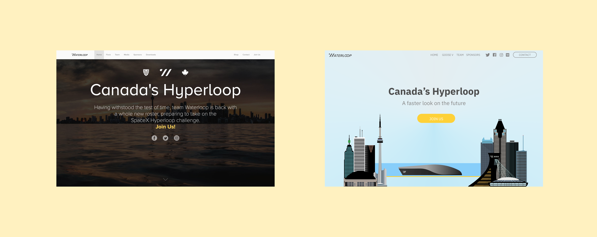
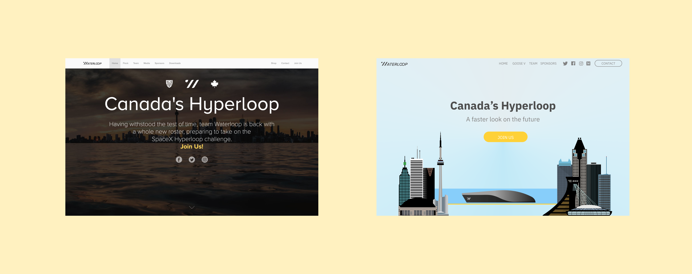

Waterloop Revamp
Waterloop is the University of Waterloo's Hyperloop design team.
Every year, they iteratively design and create hyperloop pods (affectionately referred to as "Geese") to compete in the annual
SpaceX Hyperloop Pod Competition.
Role: Brand & Web Designer Timeline: Summer 2019 Tools: Figma
Role: Brand & Web Designer Timeline: Summer 2019 Tools: Figma
Why a revamp?
The team's marketing website hadn't been updated in a while, and its age brought about a multitude of problems, including a lack of mobile responsiveness.
In the Summer of 2019, the marketing team decided it'd be a good idea to refresh and rebrand the site, as an attempt to fix the above issues. By doing this, they hoped to attract more sponsors and new recruits to Waterloop.
As part of the web design team, Erin and I were tasked with spearheading the redesign, alongside 4 developers (using the power of Vue.js to help with the mobile-responsiveness).
The Waterloop team for Summer 2019
Restructuring the layout
One of the main problems with the site was its abundance of superfluous content, arranged with no particular thought or reason.
In order to streamline the content,
we spoke with members of the marketing team, new recruits, and sponsors, in an attempt to figure out which content was to be prioritized.
Since our goals were to attract more recruits and sponsors,
we focused on emphasizing those pages. From there, we were able to map the information architecture for the new site and figure out the layout.
When considering the layout of the homepage,
we wanted to draw attention to some assets/animations of the pod itself,
the main draw of Waterloop, along with the idea/vision of being able to travel "from Toronto to Montreal in 30 minutes" without explicitly stating it.


The original homepage on the left. One of my iterations on the right.
Rebranding "Canada's Hyperloop"
Previously, Waterloop itself had no real sense of brand, other than the concept of matching our school's main colours (black and "gold").
In order to establish a more consistent and robust sense of brand, I had to figure out what members of the club (and those outside of it) perceived it to "be".
In other words, I asked them for keywords to describe Waterloop. Through surveying, I found a couple of keywords, which included:
 Visually, I tried to unpack these words using a style guide. The style guide also gave us (designers)
something to align on while creating our designs, and the developers a quick, consistent and easy reference while figuring out the front-end.
Visually, I tried to unpack these words using a style guide. The style guide also gave us (designers)
something to align on while creating our designs, and the developers a quick, consistent and easy reference while figuring out the front-end.

We went through a couple of iterations for the homepage based on our wireframes and style guide. Scrolling up, you'll see one of them, in which I tried to focus on the playful and lively aspects, again drawing attention to the assets that already existed, focusing on the pod itself, and emphasizing the vision. Eventually, through testing with multiple members on other internal teams, we landed on the one below, created by Erin. A large part of this decision was to align with the "darker" marketing material being used for the team's social media posts. (Another concern raised, that this iteration resolved: since the creation of the original site, many other Canadian Hyperloop design teams had been founded, therefore the tagline "Canada's Hyperloop" was rendered a bit less effective.)

Visually, I tried to unpack these words using a style guide. The style guide also gave us (designers)
something to align on while creating our designs, and the developers a quick, consistent and easy reference while figuring out the front-end.
The aforementioned style guide I created
We went through a couple of iterations for the homepage based on our wireframes and style guide. Scrolling up, you'll see one of them, in which I tried to focus on the playful and lively aspects, again drawing attention to the assets that already existed, focusing on the pod itself, and emphasizing the vision. Eventually, through testing with multiple members on other internal teams, we landed on the one below, created by Erin. A large part of this decision was to align with the "darker" marketing material being used for the team's social media posts. (Another concern raised, that this iteration resolved: since the creation of the original site, many other Canadian Hyperloop design teams had been founded, therefore the tagline "Canada's Hyperloop" was rendered a bit less effective.)
Final Designs
We also went about creating designs for other pages on the site, focusing on the sponsors and team portions, aligning with our original goal of increasing in recruits and sponsorships.
Throughout the process,
we worked closely with the marketing team, ensuring the content and copy of the site aligned with our intended tone and goals.
Here are some final designs for those pages created by Erin and I.

Learnings and Next Steps
Being a part of Waterloop was one of my first experiences working on a multidisciplinary team, and with it came with its own challenges
and insights with regards to collaboration and communication. As the developers continue to work on the site, certain pages will need to
be created/re-created/tweaked. Stay tuned for the the site's launch here!
PlanGrid (Autodesk)→